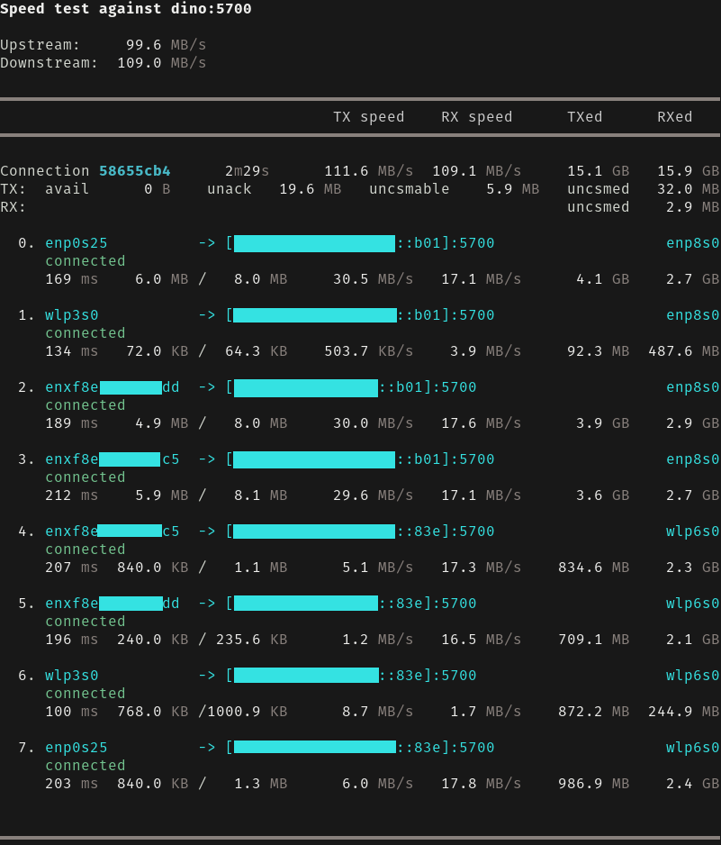

Bandwidth adds up
Data is distributed over all links continuously, by how fast each one is actually going, not by a fixed share decided in advance. Two gigabit cables and a Wi-Fi card make one connection of all three.
Your friendly link aggregator.
A TCP connection takes one path and lives and dies with it. Aggligator takes every link you have between two endpoints — Ethernet, Wi-Fi, USB, Bluetooth — and combines them into one connection with the bandwidth of all of them. Links may fail, be unplugged or added while it runs, and the connection carries on. It does what Multipath TCP and SCTP do, but over the protocols you already have and entirely in user space, so it asks nothing of the operating system.
Data is distributed over all links continuously, by how fast each one is actually going, not by a fixed share decided in advance. Two gigabit cables and a Wi-Fi card make one connection of all three.
Unplug a cable and the traffic moves to the remaining links. Nothing is lost, the connection does not stall and your code sees no error. The link is re-established by itself once it works again.
Links are added and removed while the connection runs. Plug in a USB cable and it starts carrying data; walk out of Wi-Fi range and the rest takes over.
What you get is a Stream implementing AsyncRead
and AsyncWrite, so code that speaks to a
TcpStream speaks to this as well.
Multipath TCP and SCTP need support from the operating system and from everything on the path. Aggligator runs in user space over ordinary connections, so it works where those do not.
Anything that delivers bytes or packets in order can be a link: a stream of
AsyncRead and AsyncWrite, or a Sink
and Stream of packets. Transports for the usual ones are ready
made.
The identifier of a connection is encrypted with a secret from a Diffie-Hellman exchange, so nobody can attach a link to your connection by guessing its id. Your data is not encrypted, though: wrap the links in TLS if they are not trusted.
Every link reports its speed, round-trip time and how much is unacknowledged on it, live. The monitor draws that in a terminal, and the numbers are available to your own program too.
Not a line of unsafe, built on Tokio.
It runs on every major platform and compiles to WebAssembly, so a browser tab
can aggregate links too.
Splitting one stream over several links is easy to get wrong, and it goes wrong in one particular way: a slow link holds up everything that was sent over the fast ones. Three mechanisms keep that from happening, and none of them needs to measure how much bandwidth a link has.
Nothing decides what share each link should carry. The next packet simply goes to a link that has room for it. A fast link finishes sooner, has room again sooner and ends up carrying more; a slow one carries less, without anyone working out how much less. No estimate of a link's throughput takes part in the decision, so there is no estimate to be wrong when a link changes speed — which, on Wi-Fi and mobile networks, is constantly.
Data that arrives out of order has to wait for the gap in front of it, and that waiting data is what a bad link really costs you. The sender counts it directly: every packet the far end has received but cannot pass on yet. When that backlog passes a third of the buffer, the link holding the oldest missing packet has its allowance trimmed; past three quarters, the allowance is halved. Allowances grow only while data is waiting and every link is already full, so a link is granted more only when it has proven it is the bottleneck.
If a link fails to acknowledge what it was sent, everything still in flight on it is put back in order and sent again over a different link — never over the one that just failed it.
Bandwidth cannot buy back delay: past a point, a slow link costs more in waiting than it contributes in throughput. Each link's round-trip time is therefore measured against the fastest link of the connection.
| Round-trip time | What happens to the link |
|---|---|
| up to 4× the fastest | free to take on more |
| above 5× | allowance trimmed until it stops hurting |
| above 10× | set aside, retested, brought back when it improves |
The factors follow from link_max_ping_spread, which defaults
to 5, and are relative to the fastest link of the moment, so a connection
on which everything is slow keeps all of its links. Bonding a fast line with a
much slower one on purpose — fibre and a mobile connection, say —
means raising that factor, or setting an absolute max_ping instead.
Aggligator itself never touches the network; it aggregates the links you give it. These crates provide them, and a connection may mix as many of them as it likes.
| Carries links over | Crate |
|---|---|
| TCP, with TLS if you want it | aggligator-transport-tcp |
| WebSockets | aggligator-transport-websocket |
| WebSockets, from a browser | aggligator-transport-websocket-web |
| USB | aggligator-transport-usb |
| WebUSB, from a browser | aggligator-transport-webusb |
| Bluetooth on Linux | aggligator-transport-bluer |
| SOCKS5 proxies | aggligator-transport-socks |
| anything above, wrapped in TLS | aggligator-wrapper-tls |
The client connects to a host and gets one stream. How many links that stream is made of is decided by how many ways there are to reach the host: every local interface is tried against every address the name resolves to, and links appear and disappear from then on without anybody asking.
use aggligator_transport_tcp::simple::tcp_connect;
use tokio::io::AsyncWriteExt;
// Every route to `server` becomes a link.
let mut stream = tcp_connect(["server"], 5900).await?;
// From here on it is just a stream.
stream.write_all(b"hello").await?;use aggligator_transport_tcp::simple::tcp_server;
tcp_server(
SocketAddr::new(Ipv6Addr::UNSPECIFIED.into(), 5900),
|mut stream| async move {
// One task per connection, links and all.
},
).await?;
Links do not have to be of one kind. A Connector takes as many
transports as you have and puts all of their links into the same connection, so a
device can be reached over the network and over its cable at once.
let mut connector = Connector::new();
connector.add(TcpConnector::new(["server"], 5900).await?);
connector.add(UsbConnector::new(|dev, _| dev.vendor_id() == 0x1209)?);
let stream = connector.channel().unwrap().await?.into_stream();Aggligator is a crate to build with, but two programs come out of it ready to use.
agg-tunnelForwards TCP ports through an aggregated connection. Anything that speaks TCP — SSH, a database, a web server — gets the combined bandwidth and the resilience without knowing that any of this is going on.
agg-speedMeasures what a connection between two machines actually does, link by link, and shows it while it runs. The quickest way to find out what your cables and radios add up to.
cargo install aggligator-util
Each archive holds both programs, statically linked on Linux and with nothing to install alongside them. Or build them yourself with the command above.

agg-speed between two machines with four and two network
interfaces: eight links, about 100 MB/s each way, which is what a
full-duplex gigabit link gives. Pull a cable out and the traffic redistributes
over the rest, plug it back in and the link returns; the number at the top
does not move much either way.
The whole API on docs.rs: how connections are established and accepted, what each link reports and what can be configured.
TCP, WebSockets, USB, Bluetooth and SOCKS5 proxies, each in a crate of its own, all of them mixable within one connection.
An aggregated connection is one byte stream, which is exactly what Remoc asks for: channels and RPC between machines, over every link you have.